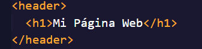
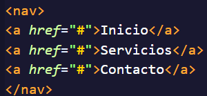
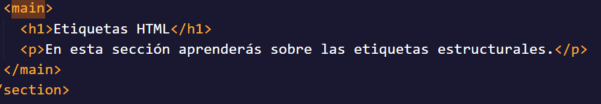
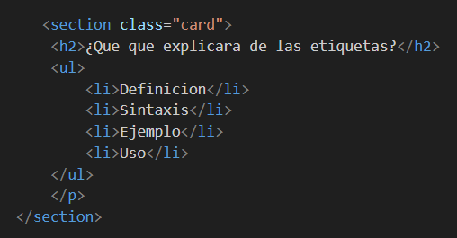
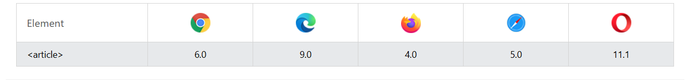
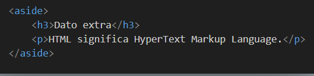
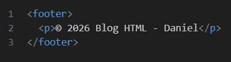

<header>
Definición: Representa la cabecera de una página o de una sección. Normalmente contiene el título, logo o menú principal.
Sintaxis:
<Ejemplo>

<header> <h1>Mi Página Web</h1> </header>
Uso: Título principal, logos, información introductoria.
<nav>
Definición: Se utiliza para agrupar enlaces de navegación dentro de una página web.
Sintaxis:
<Ejemplo>

<nav> <a href="#">Inicio</a> <a href="#">Servicios</a> <a href="#">Contacto</a> </nav>
Uso: Menú principal y enlaces importantes del sitio.
<main>
Definición: Representa el contenido principal del documento. Solo debe existir un elemento <main> por página.
Sintaxis:
<Ejemplo>

<main> <h1>Contenido Principal</h1> <p>Información importante de la página.</p> </main>
Uso: Contiene el contenido central y más importante del sitio.
<section>
Definición: Divide el contenido en secciones relacionadas entre sí.
Sintaxis:
<Ejemplo>

<section> <h2>Sección 1</h2> <p>Contenido de la sección.</p> </section>
Uso: Organizar contenido en bloques temáticos.
<article>
Definición: Representa contenido independiente y reutilizable.
Sintaxis:
<Ejemplo>

<article> <h2>Artículo</h2> <p>Contenido independiente.</p> </article>
Uso: Noticias, publicaciones de blog o artículos individuales.
<aside>
Definición: Contiene información secundaria o complementaria.
Sintaxis:
<Ejemplo>

<aside> <p>Publicidad o información adicional.</p> </aside>
Uso: Barras laterales, anuncios o contenido extra.
<footer>
Definición: Representa el pie de página de un documento o sección.
Sintaxis:
<Ejemplo>

<footer> <p>© 2026 Mi Página Web</p> </footer>
Uso: Información de autor, derechos de autor o enlaces finales.